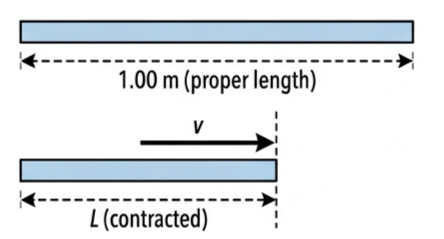
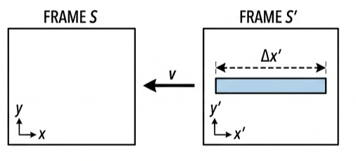
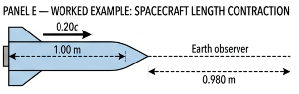
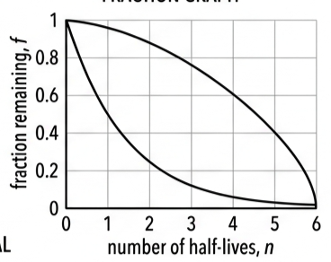
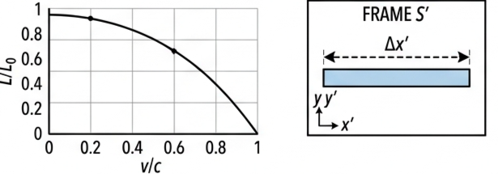
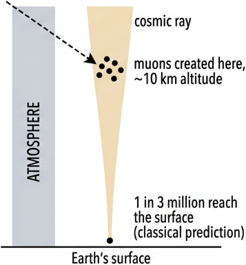
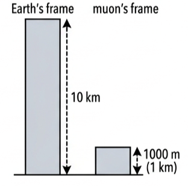

Part of A.5 Galilean and Special Relativity
· Unit A — IB Physics 2023
5 Lesson 5 of 7 · A.5 Special Relativity
Length Contraction
A moving ruler measures shorter than the same ruler at rest — an effect exactly as real as time dilation, and its mirror image. This lesson derives \(L = L_0/\gamma\), defines proper length, and uses the muon-decay experiment as one real experiment that confirms time dilation and length contraction at once.
🚀 Hook – the ruler that shrinks when it flies past you
A 1.00 m rod is carried past you at a large fraction of the speed of light. You time it as it passes a fixed point and work out its length from that measurement. You do not get 1.00 m. You measure something shorter — even though nothing has physically squeezed the rod, and an astronaut riding alongside it would swear it is still exactly 1.00 m long.

Fig 1 — The rod's own crew always measures 1.00 m. An observer watching it fly past measures a shorter length, L.
💡 Diagnostic question (think — then read on) — if a 1.00 m rod flies past you at high speed, do you measure it longer, shorter, or exactly 1.00 m? Shorter. This is length contraction, and — unlike time dilation, which stretches every interval — it only shrinks the dimension of the object that lies along the direction of relative motion.
📐 From the Lorentz transformation to L = L₀/γ
Suppose we observe a rod in another reference frame, \(S^{\prime}\), moving relative to our own frame \(S\). In \(S^{\prime}\) the rod's length, \(\Delta x^{\prime}\), is found from the position of its ends. The Lorentz transformation gives:
Lorentz transformation
$$\Delta x^{\prime} = \gamma(\Delta x - v\Delta t)$$
If we measure the positions of both ends of the rod at the same time in our own frame \(S\), then \(\Delta t = 0\), and the equation simplifies. Rearranging for \(\Delta x\), the length we record in \(S\):
$$\Delta x = \frac{\Delta x^{\prime}}{\gamma}$$
📖 Length contraction — the contraction of a measured length of an object relative to the proper length of the object, due to the relative motion of an observer.
Since \(\gamma\) is always greater than or equal to one, any length in a frame moving relative to us is always measured as less than the length we would measure if the object were at rest in our own frame.
Length contraction
$$L = \frac{L_0}{\gamma}$$

Fig 2 — The rod is at rest in \(S^{\prime}\), so its length there, \(\Delta x^{\prime}\), is the proper length. Frame \(S\) moves at \(v\) relative to \(S^{\prime}\) and measures the shorter length \(\Delta x\).
🤔 Key conceptual note. It may seem strange that relativistic effects increase time intervals but decrease lengths. For example, viewed from Earth, a receding spacecraft's clock runs slow (time expands) while its length contracts. This is because we are considering a clock at rest in the spacecraft's frame, but a length also at rest in the spacecraft's frame — dilation and contraction are two faces of the same relativity, just applied to different quantities.
✍️ Worked example A5.11
The length of an object measured in a spacecraft travelling at 20% of the speed of light away from Earth is 1.00 m. Determine what length would be detected by an observer on Earth.
1
Identify: 1.00 m is the object's proper length, \(L_0\), measured at rest in the spacecraft. Use \(L = L_0/\gamma\).
Answer: \(L = 0.980\) m. Because the situation is symmetrical, a 1.00 m length on Earth would be recorded as 0.980 m from the spacecraft.

Fig 3 — Geometry for Worked example A5.11. The 1.00 m proper length aboard the spacecraft is measured as 0.980 m from Earth.
📏 Proper length
The magnitude of a length between two points depends on whether the observer is moving with respect to it. If the observer is in the same frame of reference as the object, this gives the longest possible length — the proper length, \(L_0\). If the observer is moving relative to the object, the length measured decreases.
📖 Proper length — the length of an object measured by an observer at rest relative to it. The proper length is always the longest length measurable by any observer.
To decide who measures proper length for a given object, ask: in whose reference frame is this object at rest? That observer, and only that observer, measures its proper length — exactly as the observer for whom two events happen at the same place measures proper time.
✓ Examiner tip: state explicitly which observer is at rest relative to the object before applying \(L = L_0/\gamma\) — that answer decides which of the two given lengths is \(L_0\).
📈 Length contraction and muon survival, graphed
Graph type
Axes (X, Y)
Shape
What to read
Contracted length vs. speed
\(v/c\) (0 to 1) · \(L/L_0\)
Starts at \(L/L_0=1\), falls slowly, then drops steeply toward 0 as \(v/c \to 1\)
\(L/L_0\) never reaches zero — the curve is asymptotic at \(v=c\); mirror image of the \(\gamma\) curve
Muon survival fraction vs. half-lives elapsed
\(n\) (half-lives) · \(f\)
Exponential decay from \(f=1\), through \((1,0.5)\), \((2,0.25)\), flattening but never reaching zero
\(f = (\tfrac12)^n\); read off \(n\) to estimate what fraction of a muon population survives a given transit time

Fig 4 — \(L/L_0\) stays close to 1 until \(v/c\) exceeds about 0.5, then falls sharply — the mirror image of the \(\gamma\) curve.

Fig 5 — Each half-life elapsed halves the surviving fraction. Fewer half-lives elapsed (as seen from the muon's own frame) means many more muons survive.
☄️ The muon-decay experiment: tiny clocks falling from the sky
A muon (\(\mu\)) is an unstable subatomic particle — effectively a tiny clock travelling at a speed very close to \(c\). Muons form naturally in the Earth's atmosphere, about 10 km up, when very high-energy cosmic radiation collides with atmospheric particles. The muons produced have an average speed of around 0.995c in the Earth's frame of reference.
Muons undergo random radioactive decay — spontaneous, random change of an unstable particle — described by half-life: the time for the number of unstable particles to halve. The half-life of muons, measured in the Earth's frame, is \(1.56 \times 10^{-6}\) s.
After 1 half-life (\(1.56\times10^{-6}\) s): \(\left(\tfrac12\right)^{1}\) of the muons remain undecayed.
After 2 half-lives: \(\left(\tfrac12\right)^{2} = \tfrac14\) remain.
After 3 half-lives: \(\left(\tfrac12\right)^{3} = \tfrac18\) remain.
After \(n\) half-lives: \(\left(\tfrac12\right)^{n}\) remain.
Surviving fraction
$$f = \left(\frac{1}{2}\right)^{n}, \qquad n = \frac{\text{total time}}{\text{half-life}}$$
Classical physics — physics theories predating the paradigm shifts of relativity and quantum physics — predicts almost none of these muons should ever reach the ground. Special relativity says otherwise, and this experiment is one of the clearest confirmations we have of both time dilation and length contraction.
✍️ Worked example – the classical (Newtonian) prediction
Determine the fraction of muons, created 10 km up and travelling at 0.995c, that classical physics predicts would survive to reach the Earth's surface.
1
Identify: classical physics treats the 10 km as a fixed distance and the transit time as \(t = x/v\), timed on an ordinary clock.
2
Data: \(x = 10\times10^{3}\) m, \(v = 0.995c = 0.995\times3.00\times10^{8}\ \text{m s}^{-1}\), half-life \(= 1.56\times10^{-6}\) s.
Answer: \(\log f = 21.5\log(\tfrac12) = -6.47\), so \(f = 3.37\times10^{-7}\). Classical physics predicts that only about 1 muon reaches the surface for every 3 million created in the upper atmosphere.

Fig A5.16 — Classical physics prediction: only about 1 in 3 million muons created in the upper atmosphere would reach the Earth's surface.
⚠️ But in reality, a far greater proportion of muons is detected than this classical calculation predicts: the actual surviving fraction is approximately 0.2 — two in every ten. Classical physics cannot explain this; special relativity can.
✍️ Worked example – relativity via time dilation
In the Earth's frame, the proper length of the atmosphere the muons cross is 10.0 km and \(\Delta t = 3.35\times10^{-5}\) s, exactly as before. But an observer travelling with the muon measures the proper time, \(\Delta t_0\), since creation and decay happen at the same place in the muon's own frame.
1
Identify: use \(\Delta t = \gamma \Delta t_0\) to find the muon's own (proper) transit time.
2
Data: \(v = 0.995c\), \(\Delta t = 3.35\times10^{-5}\) s.
Answer: \(\Delta t_0 = 3.35\times10^{-6}\) s. Number of half-lives \(= \dfrac{3.35\times10^{-6}}{1.56\times10^{-6}} = 2.15\) Fraction reaching the surface \(= \left(\tfrac12\right)^{2.15} = 0.23\). This is consistent with the actual measured fraction (≈0.2) — experimental evidence for time dilation.
✍️ Worked example – relativity via length contraction
In the muon's own frame of reference, the 10.0 km thickness of the lower atmosphere is itself length-contracted.
1
Identify: use \(L = L_0/\gamma\) with the 10 km atmosphere as the proper length \(L_0\) (measured at rest in the Earth's frame).
Answer: \(t = 3.35\times10^{-6}\) s — the same transit time as the time-dilation route, so the surviving fraction is again 0.23. From the muon's own frame, what we measure as 10 km of atmosphere is only 1 km.

Fig 6 — What Earth measures as 10 km of atmosphere, the muon's own frame measures as just 1000 m.
✓ Experimental confirmation of this result has provided evidence in support of length contraction, entirely independently of the time-dilation calculation above — both routes predict the same 0.23, and both match what is actually measured.
🌍 Real-world: why particle accelerators need this formula
Particle accelerators routinely push protons and electrons to speeds above 0.99c. At those speeds \(\gamma\) can reach into the thousands, so the accelerator's own length, as measured in the particle's frame, is compressed to a tiny fraction of its rest length. Any calculation of collision timing or particle lifetime that ignores this is simply wrong at these speeds.
✓ Examiner tip: length contraction and time dilation are not two separate coincidences — they are the same relativity of simultaneity, applied to a spatial and a temporal separation respectively.
🚀 HL Extension – dropping the Δt = 0 assumption
The full Lorentz transformation, \(\Delta x^{\prime} = \gamma(\Delta x - v\Delta t)\), only reduces to the simple length-contraction formula when the two end-position measurements are simultaneous in the observer's own frame (\(\Delta t = 0\)). If they are not simultaneous, the general transformation must be used directly — this is why observers in relative motion can even disagree on whether two events are simultaneous at all.
Challenge: the muon calculation used \(\gamma = 10\) exactly for \(v = 0.995c\). Show that \(\gamma\) is actually closer to 10.01. (Answer: \(v^2/c^2 = 0.995^2 = 0.990025\); \(1 - 0.990025 = 0.009975\); \(\sqrt{0.009975} = 0.09987\); \(\gamma = 1/0.09987 = 10.01\) — the rounded value of 10 used above is accurate to about 0.1%.)
⚠️ Trap corner – common mistakes
Misconception
Correct view
Length contraction physically squeezes the object
Nothing is physically compressed. It is a measurement effect between reference frames in relative motion — the object's own crew never notices any change
The proper length is measured by whichever observer "isn't moving"
There is no absolute rest. Proper length is measured by the observer at rest relative to the object — which observer that is depends entirely on which object is being measured
Length contraction shrinks all three dimensions of a moving object
Only the dimension parallel to the direction of relative motion contracts. Dimensions perpendicular to the motion are unchanged
Only time dilation is needed to explain muon survival
Two independent routes — time dilation (Earth's frame) and length contraction (muon's frame) — both correctly predict the same 0.23 survival fraction; they are two views of one relativity
Since γ ≥ 1, lengths always come out longer, like times do
The opposite: \(L = L_0/\gamma\) makes lengths shorter; it is time intervals that satisfy \(\Delta t = \gamma\Delta t_0\) and come out longer
⚠️ Most common slip: dividing by γ when you should multiply, or vice versa. Lengths shrink — divide by γ. Time intervals stretch — multiply by γ. Get this backwards and every muon-decay calculation flips.
1. A rod has proper length 2.00 m. An observer measures it moving at 0.60c, where γ = 1.25. What length does the observer measure?
A 1.60 m
B 2.50 m
C 1.20 m
D 2.00 m
2. Length contraction affects
A all three spatial dimensions equally
B only the dimension parallel to the relative motion
C only dimensions perpendicular to the motion
D only the object's mass, not its length
3. Proper length is measured by
A any observer, provided their clock is fast enough
B the observer at rest relative to the object
C whichever observer is moving fastest relative to the object
D an observer exactly halfway between the two frames
4. In the muon-decay experiment, the classical (Newtonian) calculation predicts a surviving fraction of about
A 0.23
B 0.50
C 3×10⁻⁷
D 1.0
5. In the muon's own reference frame, the 10 km thickness of atmosphere (γ = 10) is measured as approximately
A 10 km
B 5 km
C 1 km
D 0.1 km
6. Which pair of formulas is correctly matched?
A \(\Delta t = \gamma \Delta t_0\) and \(L = L_0/\gamma\)
B \(\Delta t = \Delta t_0/\gamma\) and \(L = \gamma L_0\)
C both quantities divide by γ
D both quantities multiply by γ
Practice check — fill in the blanks
Complete the statements:
Length contraction is given by \(L = L_0/\gamma\), where \(L_0\) is called the length — the longest length measurable by any observer, recorded by the observer who is at relative to the object. Since \(\gamma\) is always greater than or equal to , every other observer measures a length than the proper length. Length contraction only affects the dimension to the direction of relative motion. In the muon-decay experiment, classical physics predicts about one muon in three reaches the Earth's surface, but relativistic calculations (via either time dilation or length contraction) predict a much larger surviving fraction of about , matching experiment.
Exam‑style questions
Exam question · State
Q32. In a laboratory, an electron is accelerated by a potential difference of 100 kV. Its speed is then measured by timing how long it takes to pass between two different points measured in the laboratory as being 5.00 m apart. Is an observer in the electron's reference frame, or the observer in the laboratory reference frame, recording the proper length between the two points? [2 marks]
✓ The two points are fixed and at rest in the laboratory frame, so the 5.00 m separation is the laboratory observer's own rest-frame measurement. ✓ The laboratory observer is therefore measuring the proper length; the electron observer would measure this separation as contracted.
Exam question · State
Q33. A rod measured in its rest frame to be one metre in length is accelerated to 0.33c. The rod is then timed as it passes a fixed point. Is the observer at the fixed point or the observer travelling with the rod measuring proper length between the start and finish events? [2 marks]
✓ Proper length is always measured by the observer at rest relative to the object being measured — here, the rod. ✓ The observer travelling with the rod measures its proper length of 1 m; the fixed-point observer would find the rod's length contracted.
Exam question · State
Q34. The same rod is timed by both observers as it travels between two fixed points in a laboratory. If the observers are recording when the front of the rod passes each fixed point, is either observer measuring the proper length for the distance between the start and finish events? [2 marks]
✓ The two fixed points are at rest in the laboratory frame, so the separation between them is the laboratory observer's own proper length. ✓ The rod observer sees those two points moving, and so measures this separation as contracted — not the proper length.
Exam question · State
Q35. In a third experiment the two observers start timing when the front of the rod passes the first point and stop timing when the end of the rod passes the second point. Is either observer measuring the proper length for the distance between the start and finish events? [2 marks]
✓ This spatial separation mixes the distance between two fixed points with the rod's own length, so it is not simply the rest length of any single object. ✓ Neither observer is at rest relative to whatever is separating the two events, so neither observer measures the proper length in this case.
Exam question · Calculate
Q36. A rod is measured to have a proper length of exactly 1.00 m. Calculate how long you would measure it to be if it was to fly past you at 0.80c. [2 marks]
Q37. The time taken for the rod in question 36 to pass a fixed point in the laboratory is \(2.5\times10^{-9}\) s. Determine what time interval an observer travelling with the rod would measure between the same two events. [3 marks]
✓ The fixed-point observer sees both events (front, back of rod passing) at the same location, so this 2.5×10⁻⁹ s is the proper time. ✓ The rod observer measures the dilated interval: \(\Delta t = \gamma \Delta t_0 = 1.667 \times 2.5\times10^{-9}\) ✓ \(\Delta t = 4.2\times10^{-9}\ \text{s}\).
Exam question · Calculate
Q38. Fatima flies through space and, according to Fatima, her height is 1.60 m. Fatima flies headfirst past an alien spaceship and the aliens measure her speed to be 0.80c. a) How tall will the aliens on their spaceship measure Fatima to be? b) Oliver takes \(6.1\times10^{-9}\) s to fly past the same aliens at 0.90c. According to the aliens what time interval does it take Oliver to fly past them? [4 marks]
✓ (a) 1.60 m is Fatima's proper length (her own rest frame). \(\gamma = 1/\sqrt{1-0.80^2} = 1.667\) ✓ \(L = 1.60/1.667 = 0.96\ \text{m}\). ✓ (b) \(6.1\times10^{-9}\) s is Oliver's own proper time. \(\gamma\) at 0.90c \(= 1/\sqrt{1-0.90^2} = 2.29\) ✓ \(\Delta t = \gamma \Delta t_0 = 2.29 \times 6.1\times10^{-9} = 1.4\times10^{-8}\ \text{s}\).
Exam question · Calculate (HL)
Q39. In a space race, a spaceship, measured to be 150 m long when stationary, is travelling at relativistic speeds when it crosses the finish line. a) According to the spaceship it takes \(7.7\times10^{-7}\) s to cross the finishing line. Calculate how fast it is travelling in terms of c. b) Determine what time interval the spaceship takes to cross the finishing line according to an observer at the finishing line. c) According to the observer at the finishing line, how long is the spaceship? d) According to the observer at the finishing line, how fast is the spaceship travelling? [6 marks]
✓ (a) In the ship's own frame, the finish line sweeps past its full proper length: \(v = L_0/\Delta t = 150/(7.7\times10^{-7}) = 1.95\times10^{8}\ \text{m s}^{-1} = 0.65c\). ✓ (b) \(\gamma = 1/\sqrt{1-0.65^2} = 1.32\). The finish-line observer measures the proper time: \(\Delta t_0 = \Delta t_{\text{ship}}/\gamma = 7.7\times10^{-7}/1.32 = 5.9\times10^{-7}\ \text{s}\). ✓ (c) \(L = L_0/\gamma = 150/1.32 = 114\ \text{m}\). ✓ (d) Relative speed is the same for both observers: \(v = L/\Delta t_0 = 114/(5.9\times10^{-7}) \approx 0.65c\), matching part (a).
Exam question · Calculate
Q40. In the same race as question 39 a sleek new space cruiser takes only \(2.0\times10^{-6}\) s to cross the finish line according to the race officials at the line. They measure the space cruiser to be 450 m long. How long is the space cruiser according to its sales brochure? [3 marks]
✓ In the officials' frame: \(v = L/\Delta t = 450/(2.0\times10^{-6}) = 2.25\times10^{8}\ \text{m s}^{-1} = 0.75c\) ✓ \(\gamma = 1/\sqrt{1-0.75^2} = 1.51\) ✓ The brochure quotes the proper length: \(L_0 = L\gamma = 450 \times 1.51 = 680\ \text{m}\).
Exam question · Calculate / Explain
Q41. Some muons are generated in the Earth's atmosphere 8.00 km above the Earth's surface as a result of collisions between atmospheric molecules and cosmic rays. The muons that are created have an average speed of 0.99c. a) Calculate the time it would take the muons to travel the 8.00 km through the Earth's atmosphere to detectors on the ground according to Newtonian physics. b) Calculate the time it would take the muons to travel through the atmosphere according to a relativistic observer travelling with the muons. c) Muons have a very short half-life. Explain how measurements of muon counts at an altitude of 8.0 km and at the Earth's surface can support the theory of special relativity. [5 marks]
✓ (a) \(t = x/v = 8000/(0.99\times3.00\times10^{8}) = 2.69\times10^{-5}\ \text{s}\). ✓ (b) \(\gamma = 1/\sqrt{1-0.99^2} = 7.09\). Proper time \(= \Delta t/\gamma = 2.69\times10^{-5}/7.09 = 3.80\times10^{-6}\ \text{s}\) (equivalently, the 8.00 km contracts to \(8000/7.09 = 1129\) m, and \(t = 1129/(2.97\times10^{8})\) gives the same value). ✓ Classically, \(n = 2.69\times10^{-5}/1.56\times10^{-6} = 17.3\) half-lives, so \(f \approx 6\times10^{-6}\) — almost none should survive. ✓ Relativistically, \(n = 3.80\times10^{-6}/1.56\times10^{-6} = 2.44\) half-lives, so \(f \approx 0.18\) — a far larger, measurable fraction. ✓ Because the measured muon counts at the two altitudes match the relativistic prediction and not the classical one, this experiment supports time dilation (and, equivalently, length contraction).
Exam question · Calculate
Q42. In a high-energy physics laboratory electrons were accelerated to a speed of 0.950c. a) How long would scientists in the laboratory record for these electrons to travel a distance of 2.00 km at this speed? b) Calculate the time this takes in the reference frame of the electrons. [3 marks]
✓ (a) \(t = x/v = 2000/(0.950\times3.00\times10^{8}) = 7.02\times10^{-6}\ \text{s}\). ✓ (b) \(\gamma = 1/\sqrt{1-0.950^2} = 3.20\). The 2.00 km is contracted in the electron's frame: \(L = 2000/3.20 = 625\ \text{m}\). ✓ \(t_0 = L/v = 625/(2.85\times10^{8}) = 2.19\times10^{-6}\ \text{s}\) — equivalently, the proper time \(\Delta t/\gamma = 7.02\times10^{-6}/3.20\).